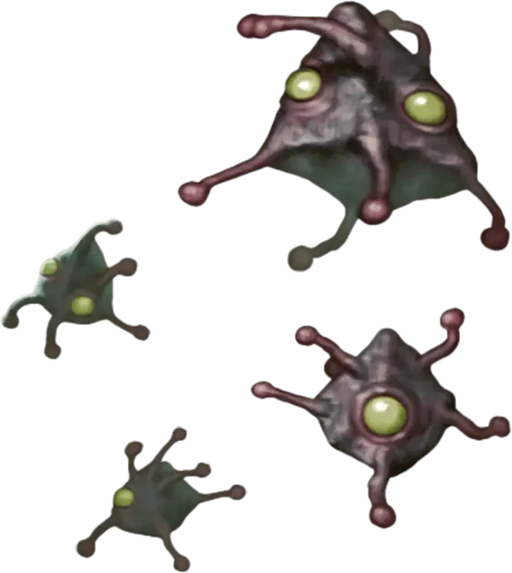

Геммул энцефалона
Encephalon Gemmule
Крошечная Аберрация, без мировоззрения

Класс Доспеха 14
Хиты 54 (12к4 + 24)
Скорость 40 футов
| мод | спас | ||
|---|---|---|---|
| СИЛ | 1 | −5 | −5 |
| ЛОВ | 18 | +4 | +4 |
| ТЕЛ | 14 | +2 | +2 |
| мод | спас | ||
|---|---|---|---|
| ИНТ | 5 | −3 | −3 |
| МДР | 12 | +1 | +1 |
| ХАР | 7 | −2 | −2 |
Сопротивление урону психическая энергия
Иммунитет к состояниям ослепление
Чувства слепое зрение 30 футов (слеп за пределами этого радиуса), пассивное Восприятие 11
Опасность 3 (700 опыта)
Бонус мастерства +2
Особенности
Потомство энцефалона. Геммула созревает в скопление энцефалона [encephalon cluster], если её не убить в течение 30 (4к12 + 4) дней после её создания.
Сопротивление магии. Геммула совершает с преимуществом спасброски от заклинаний и других магических эффектов.
Действия
Психический удар. Рукопашная атака оружием: +6 к попаданию, досягаемость 5 футов, одна цель. Попадание: 16 (3к10) психического урона.
Бонусные действия
Присоска. Геммул нацеливается на одно существо в пределах 5 футов от себя и заставляет цель совершить спасбросок Ловкости Сл 14. В случае провала геммула входит в пространство цели и прикрепляется к цели. Пока геммула прикреплена, цель получает 7 (3к4) колющего урона в начале каждого своего хода, и геммула не может снова использовать Присоску, пока не отсоединится. Она может отделиться, потратив 5 футов своего движения. Действием цель или существо в пределах 5 футов от цели может отделить геммулу преуспев в проверке Силы Сл 15.
Описание
Из-за влияния Дальнего предела из яиц внутри скопления энцефалона больше не вылупляются головастики иллитидов. Вместо этого, когда одно из яиц скопления достигает зрелости, оно выбрасывается из массы в виде геммулы энцефалона.
При рождении геммул выглядит как деформированный самородок пирамидальной формы с тонкими ногами и мягкой мясистой материей. Если оставить его на произвол судьбы, геммул энцефалона за считанные дни превращается в скопление энцефалона, после чего он начинает производить свои собственные геммулы.